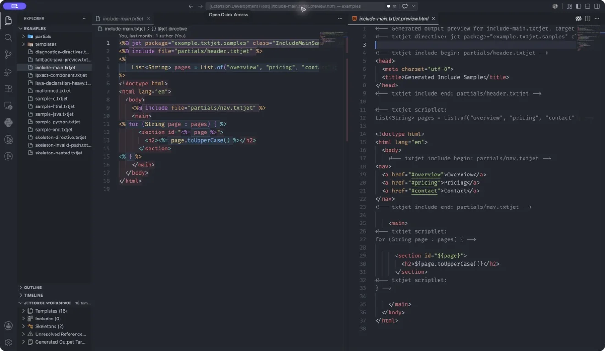

- <%@ jet package="demo.codegen" class="ModelWriter" %>
- <% for (Field field : model.fields()) { %>
- private <%= field.type() %>
- <%= field.name() %>;
- <%@ include file="partials/accessors.jetinc" %>
TXTJET + ECLIPSE JETVS CODE / 0.0.21
See the code behind the template.
Preview generated output, trace includes, and understand unfamiliar JET projects—without leaving VS Code.
- Free & open source
- Runs locally
- No telemetry
01 Live source-to-output demo
See what each line generates.
Select a template line. When JetForge can map it reliably, the matching preview line lights up beside it.
Source mapping
Java · Directive mapped to local preview line 1
- package demo.codegen;
- private String title;
- private int revision;
- public String getTitle() {
- return title;
02 Real workspace
Keep the whole project in view.
Templates, includes, previews, and dependencies—together in VS Code.

Navigate
Follow includes, helpers, and project impact.
Preview
Map source to local output in both directions.
Refactor
Rename, move, and extract without guessing.
03 Get started
Open one template. See what it makes.
Free, local, and open source. No telemetry.